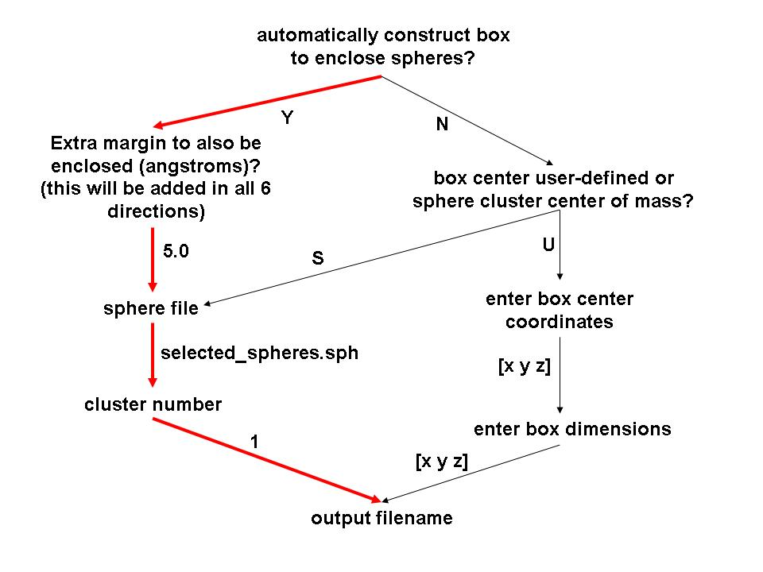
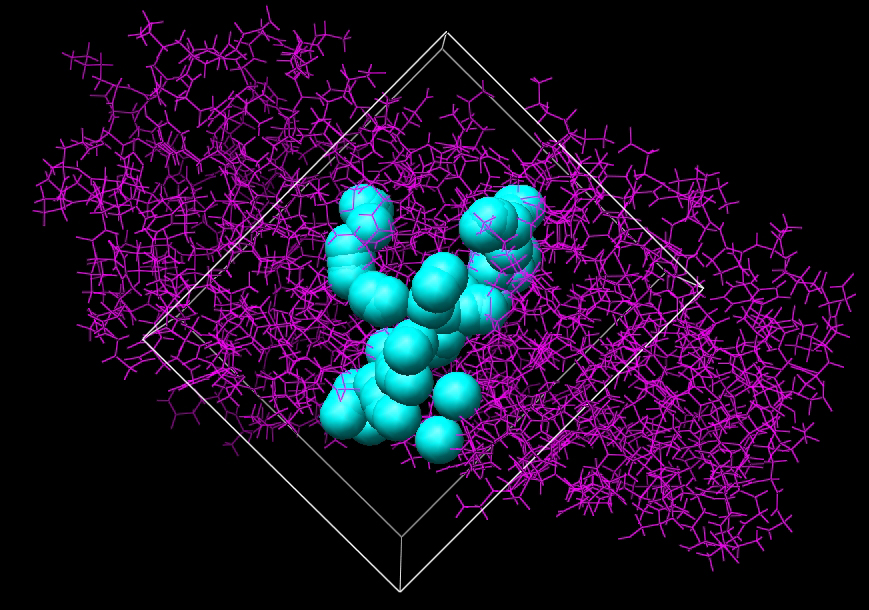
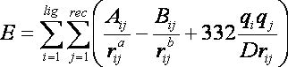

Generating the Grid
Authors: Tiba Aynechi and P. Therese Lang
Last updated July 31, 2018 by Scott Brozell
This tutorial describes the generation of the grids used for grid-based scoring in DOCK. We study the complex L-Arabinose-Binding Protein bound to L-Arabinose (PDB ID 1ABE ) as an example system. However, these techniques should be transferable to any protein-ligand system.
To start this tutorial, obtain the rec_charged.mol2 and the selected_spheres.sph files from the "Structure Preparation Tutorial" and the " Sphere Generation and Selection Tutorial," respectively. The programs showbox and grid that are distributed and installed with DOCK are required.
STEP 1: Creating a box around the active site.
The interactive program showbox is used to visualize and define the location and size of the grid to be calculated using grid. The output of the program is in PDB format and can be visualized using a program capable of displaying PDB files. When you run the program interactively, you will be presented with a set of questions below, some of which may or may not appear depending on your answer.
Flow Chart of Questions for Showbox
(Red path is followed in this tutorial)

Run the command "showbox" to generate the question tree and calculate the grid box. Alternatively, you can list the answers to the questions in a text file, which can then be piped into showbox with the command "showbox < box.in."
The output rec_box.pdb
is shown in the graphical representation below:

Image generated using Chimera (http://www.cgl.ucsf.edu/chimera)
STEP 2: Generating the Grid.
Grid creates the grid files necessary for rapid score evaluation in DOCK. Two types of scoring are available: contact and energy scoring. The scoring grids are stored in files ending in *. cnt and *. nrg respectively. When docking, each scoring function is applied independent of the others and the results are written to separate output files. Grid also computes a bump grid which identifies whether a ligand atom is in severe steric overlap with a receptor atom. The bump grid is identified with a *.bmp file extension. The file containing the bump grid also stores the size, position and grid spacing of all the grids.
The grid calculation must be performed prior to docking. The calculation can take up to 45 minutes, but needs to be done only once for each receptor site. Since DOCK can perform continuum scoring without a grid, the grid calculation is not always required. However, for most docking tasks, such as when multiple binding modes for a molecule or multiple molecules are considered, it is more time efficient to precompute the scoring grids.
This tutorial uses the grid-based energy scoring function. The energy scoring component of DOCK is a type of force field scoring. Force field scores are approximate molecular mechanics interaction energies, consisting of van der Waals and electrostatic components:

where each term is a double sum over ligand atoms i and receptor atoms j.
To generate the grid itself you need to use the program grid that is distributed as an accessory to DOCK (Kuntz et al. J. Mol. Biol. 1982. 161: 269-288). Using the box generated in Step 1, the program grid pre-computes the contact and electrostatic potentials for the active site at a specified grid spacing. In order to run grid, you must generate a file named grid.in either interactively by answering questions or manually by creating a text file.
USAGE: grid -i input_file [-o output_file] [-stv]
OPTIONS:
-i input_file #Input parameters extracted from input_file, or grid.in if not specified
-o output_file #Output written to output_file, or grid.out if not specified
-s #Input parameters entered interactively
-t #Reduced output level
-v #Increased output level
grid.in and grid.out are the default input/output names, but you may specify others. Below are the parameters that may be declared for the grid calculation. Those in bold were used for the calculation in this tutorial.
NOTE: The following parameter definitions will use the format below:
parameter_name [default] (value):
#descriptionIn some cases, parameters are only needed (questions will only be asked) if the parameter above is enforced. These parameters are indicated below by additional indentation.
- compute_grids [no] (yes, no):
#Flag to compute scoring grids
- grid_spacing [0.3] (float):
# The distance between grid points along each axis.- output_molecule [no] (yes, no):
#Flag to write out the coordinates of the receptor into a new, cleaned-up file. Atoms are
#resorted to put all residue atoms together
- receptor_out_file [receptor_out.mol2] (string):
#File for cleaned-up receptor when output_molecule set- contact_score [no] (yes, no):
#Flag to construct contact grid- contact_cutoff_distance [4.5] (float):
#Maximum distance between heavy atoms for the interaction to be counted as a contact- bump_filter [no] (yes, no):
#Flag to screen each orientation for clashes with receptor prior to scoring and minimizing- bump_overlap [0.75] (float):
#Amount of VDW overlap allowed. If the probe atom and the receptor heavy atom approach
#closer than this fraction of the sum of their VDW radii, then the position is flagged as a bump
0 = Complete overlap allowed
1 = No overlap allowed- energy_score [no] (yes, no):
#Flag to perform energy scoring- energy_cutoff_distance [10] (float):
#Maximum distance between two atoms for their contribution to the energy score to be
#computed- atom_model [u] (u, a):
#Flag to control modeling of nonpolar hydrogens, i.e., hydrogens attached to carbonsu = United atom model. These hydrogens are assigned a zero VDW well-depth and the partial charge is transferred to the carbon.
a = All atom model. These hydrogens have regular VDW well-depth and the partial charge is not modified.
- attractive_exponent [6] (int):
# Exponent of attractive Lennard - Jones term for VDW potential- repulsive_exponent [12] (int):
# Repulsive of attractive Lennard - Jones term for VDW potential- distance_dielectric [yes] (yes, no):
# Flag to make the dielectric depend linearly on the distance- dielectric_factor[4.0] (float):
#Coefficient of the dielectric- receptor_file [receptor.mol2] (string):
#Receptor coordinate file. Partial charges and atom types need to be present.- box_file [site_box.pdb] (float):
#File containing SHOWBOX output file which specifies boundaries of grid- vdw_definition_file [vdw.defn] (string):
#VDW parameter file- score_grid_prefix [grid] (string):
#Prefix for file name of grids. File extension will be appended automatically
NOTE: You should specify the full paths for the rec_charged.mol2, rec_box.pdb and vdw definition files. A more detailed explanation of the scoring functions and the input parameters can be found in the DOCK 6 Manual.
The program will generate separate grid files for the contact, energy and bump calculations, with .cnt, .nrg, and .bmp extensions respectively. In this example, the grid files are named using the prefix 'grid' specified in grid.in: grid.nrg and grid.bmp. The DOCK grid files are binary files. Since binary files are platform dependent, the energy and bump grids available for download here may not be compatible with your platform. For reference these were produced on x86_64 hardware running Linux with GNU 4.1.2 compilers. There is also an output file named grid.out summarizing the parameters used and the grids generated. Be sure to read this file and investigate any warnings.
{kind=link}